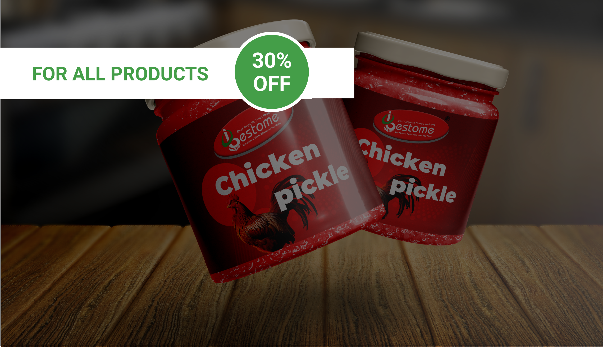
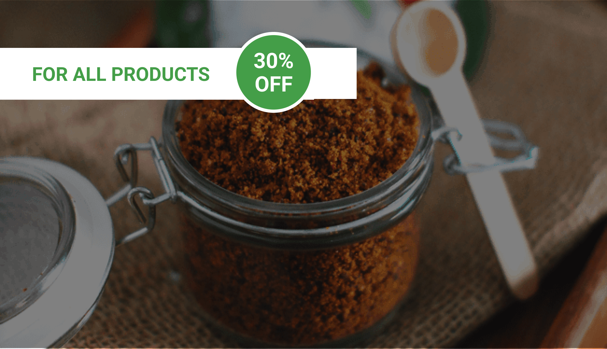

Chicken Pickle, a tangy and spicy condiment made from marinated chicken, elevates any meal with its
mouthwatering flavors and captures the essence of traditional recipes.
More Products

Buffalo Chammanthi Podi is a Kerala-inspired spice blend, crafted from roasted coconut, spices, and
buffalo meat, providing a savory kick to any dish.
More Products